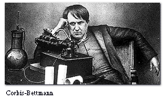
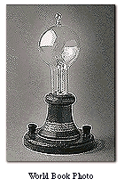

 |
| Inventor Thomas
Edison and his phonograph |
|
|
The
Edison Tower of Light
 Dominating
the Hall of Electricity is one of the most spectacular, talked-about
displays of the fair–the Edison Tower of Light, built by
Thomas
Edison, the American inventor of the electric lamp. The
tower is a spectacular shaft as high as a seven-story building studded
with thousands of lights of different colors that flash in harmony
to music. Atop the shaft, a huge model of a light bulb made of a
mosaic of thousands of glass prisms, showers the air with white
rays of sparkling light.
|
| |
|